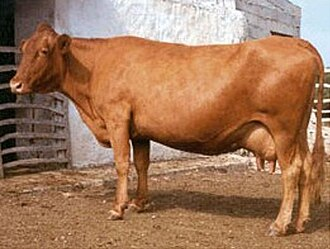

MENORQUINA
Weight:
770 to 1210 pounds
Height :
47 to 51 inches
Length:
5.25 feet to 6.5 feet
Color:
solid black or dark brown coat.
Longevity:
10 – 15 years.
Menorquina personality
Hardworking: Menorquina cows are traditionally used for agricultural purposes, particularly for milk and cheese production. As such, they may be known for their diligence and hardworking nature, reliably providing resources for their owners.
Adaptability: Living on an island like Menorca, where resources and conditions may vary, these cows likely possess adaptability. They might be able to thrive in different environments and climates, showcasing their resilience.
What to expect
1.Appearance: Menorquina cows typically have a distinctive appearance. They are medium-sized cattle with a sturdy build. Their coat color can vary but is often dark brown or black, sometimes with white markings on the face or legs.
2.Adaptability: Menorquina cows are well-adapted to the rugged terrain and harsh climate of Menorca. They are known for their hardiness and ability to thrive in semi-feral conditions, often grazing on sparse vegetation in rocky landscapes
3.Temperament: These cows are generally docile and calm in temperament, making them easy to handle. They are well-suited for extensive grazing systems and are known for their ability to forage efficiently in challenging environments.
4.Milk Production: While not primarily bred for milk production, Menorquina cows do provide a moderate amount of milk, which is often of good quality. Traditionally, the milk has been used for making cheese and other dairy products on the island.
5.Cultural Importance: The Menorquina cow holds cultural significance on the island of Menorca, where it has been part of the agricultural landscape for centuries. It is often featured in local festivals, folklore, and traditions, reflecting its importance to the island's heritage
History of the Menorquina
T The Menorquina cow is a breed of cattle native to the Balearic island of Menorca, which is part of Spain. Here's an overview of its history
Origins: The Menorquina cow has been present on the island of Menorca for centuries, likely since ancient times. Its exact origins are unclear, but it is believed to have descended from ancient Mediterranean cattle breeds
Traditional Husbandry: Historically, the Menorquina cow has been an integral part of Menorcan agriculture and rural life. It was primarily used for agricultural work, such as plowing fields, hauling loads, and providing milk for local consumption
Characteristics: The Menorquina cow is known for its adaptability to the island's rugged terrain and harsh climatic conditions. It is a small to medium-sized breed with sturdy build, strong legs, and a docile temperament. The coat color is usually black, although some individuals may have white markings.